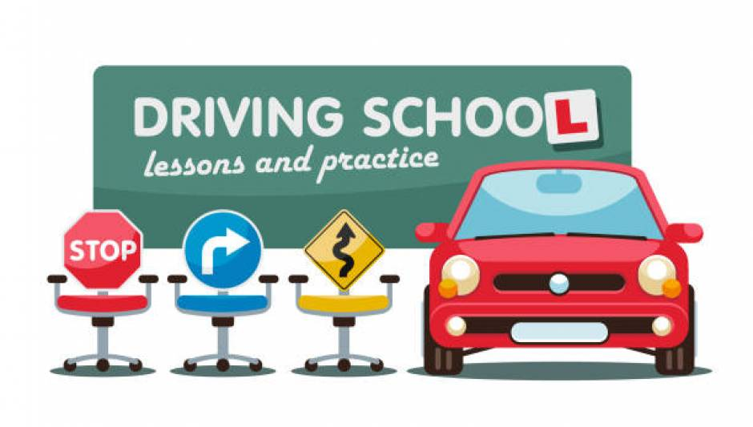

New drivers, especially young ones, have extremely high crash rates.
For example, Williams1 reported that in 1995 in the United States, 16
year old drivers were involved in 35 crashes per million miles of
travel, compared to drivers in their 20s and early 40s who were
involved in nine and four crashes, respectively, per million miles. A
major reason that young drivers are over represented in road crashes
is because they are inexperienced, lacking the necessary driving
skills and capabilities.
This is not surprising because driving is a complex, self paced
activity involving a myriad of basic tasks (for example, steering,
braking) and higher order skills (for example, hazard perception,
problem solving), many of which are essential to safe vehicle
operation. A prevalent response to address the complexities inherent
in driving has been to ensure that the needed skills and capabilities
are provided before full licensing is permitted. This is usually done
either less formally under supervision of a parent or other adult
licensed driver, or formally under professional in-class and
in-vehicle instruction, or both. There has always been considerable
expectation for the value of formal education and training. Indeed,
such programs are generally accepted as an efficient and effective
means for learning to drive and for preparing to take the road test,
which sets the minimum driving standards in a jurisdiction.
